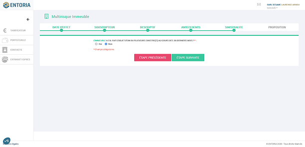
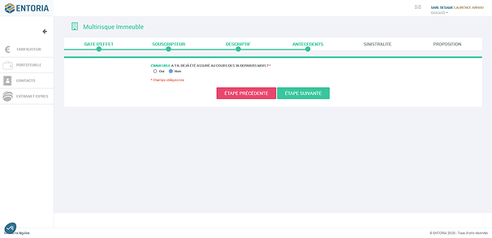
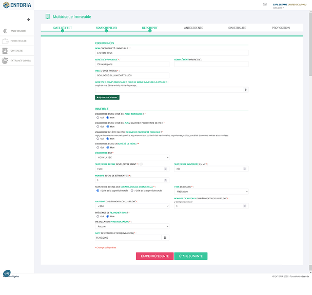
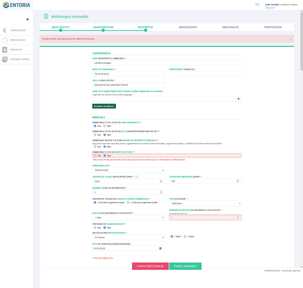
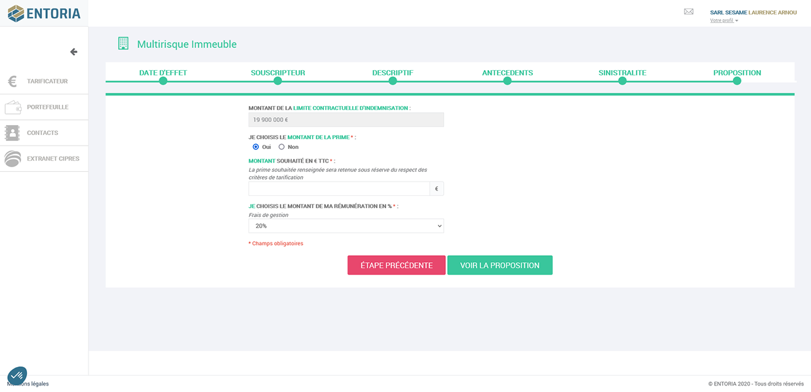
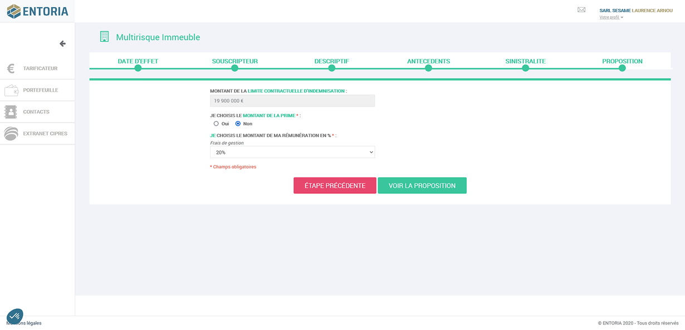
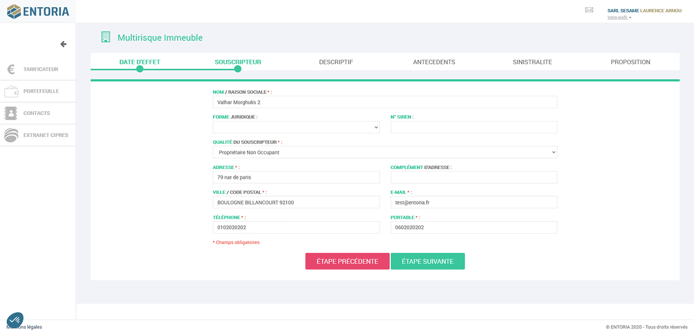
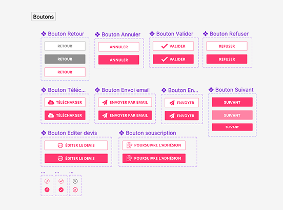
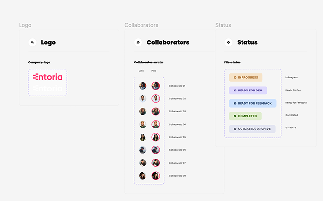

Refonte de l'espace courtier et simplification du parcours de souscription Assurances Multirisque Immeuble (MRI), suite au changement de la charte identitaire de l'entreprise et à l'évolution des besoins utilisateur.
Voir le prototype FigmaContexte
Refonte de l'espace courtier et simplification du parcours de souscription Assurances Multirisque Immeuble suite à changement de la charte identitaire de l'entreprise et à l'évolution des besoins utilisateur.
L'objectif principal de l'assurance MRI est la couverture collective. Cette couverture permet d'indemniser les personnes victimes de problèmes dans ou provenant des parties communes de l'immeuble. Elle permet aussi de couvrir les risques graves pour l'immeuble comme les incendies ou les effondrements.
L'ancien parcours de souscription reposait sur des formulaires denses et peu lisibles, avec une charte graphique obsolète ne reflétant plus l'identité actuelle de l'entreprise.
Courtiers en assurance accompagnant leurs clients dans la souscription d'un contrat Multirisque Immeuble, depuis l'espace courtier dédié.
Ma démarche
Le parcours de souscription existant regroupait de nombreuses informations sur des écrans uniques et denses (dates, souscripteur, descriptif, antécédents, garanties), rendant la lecture et la saisie fastidieuses pour le courtier.
J'ai découpé ce parcours en un tunnel séquentiel clair, avec un stepper visible en permanence (Date d'effet · Souscripteur · Descriptif · Antécédents · Garanties · Proposition), permettant de se situer à chaque étape et de revenir facilement en arrière si besoin. La nouvelle charte identitaire de l'entreprise a été appliquée à l'ensemble de l'interface.
Ce que j'ai conçu
Un indicateur d'étapes toujours visible (Date d'effet, Souscripteur, Descriptif, Antécédents, Garanties, Proposition) pour situer le courtier dans le parcours à tout moment.
Les champs denses de l'ancienne version ont été redistribués sur plusieurs écrans, avec des libellés clarifiés et les champs obligatoires clairement identifiés.
Application de la nouvelle identité visuelle de l'entreprise (couleurs, logo, typographie) sur l'ensemble de l'espace courtier.
Un prototype navigable a été produit pour valider les parcours auprès des parties prenantes avant développement.
Une bibliothèque de composants boutons (Retour, Annuler, Valider, Refuser, Suivant, Continuer, Modifier, Souscrire) pour garantir la cohérence visuelle sur l'ensemble du produit.
Un composant de suivi (logo, collaborateurs, statuts colorés) pensé pour le tableau de bord de gestion des dossiers en cours.
Réalisation
Les écrans d'origine du parcours de souscription : formulaires denses, peu hiérarchisés, sur une ancienne charte graphique.




Premières étapes du parcours refondu, avec le stepper de progression et la nouvelle charte identitaire.

Étapes intermédiaires du parcours, avec formulaires allégés et champs obligatoires clarifiés.

Dernières étapes menant à la proposition finale de contrat.

Bibliothèque de boutons standardisée, et composant de suivi des collaborateurs & statuts pour le tableau de bord.


Résultat
Un parcours de souscription structuré en étapes claires, une charte identitaire à jour sur l'ensemble de l'espace courtier, et un Design System réutilisable garantissant la cohérence des futurs écrans du produit.